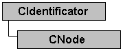

CNode
Declaration
class DNETMOD_API CNode : public CIdentificator
Hierarchy
Description
This class is provided for generalization of nodes in a DeviceNet™ network. It is a base class for CInterface and CDevice classes representing respectively interface (master device) and slave device in the network. Each of these has a MAC ID, a consumed and produced connection size on the network and a state which to tell you if the node is active on the network or not.
Class members
| Construction/Destruction | |
| CNode | Constructors |
| Get/Set | |
| IsActive | Checks node activity on the network. |
| GetMacId | Retrieves MAC ID of the node. |
| SetMacId | Set MAC ID of the node. |
| GetConsumedConnSize | Retrieves count of consumed bytes by the node from the network. |
| SetConsumedConnSize | Sets count of consumed bytes by the node from the network. |
| GetProducedConnSize | Retrieves count of node produced bytes to the network. |
| SetProducedConnSize | Set count of node produced bytes to the network. |
Requirements
#include "cnode.h"
| OS\Libraries | Static (CT) | Import library (CT) | Shared (RT) |
|---|---|---|---|
| Linux | libdnetmod.a | - | libdnetmod.so.0.2 |
| Win32 | dnetmod.lib | dnetmodimp.lib | dnetmod.dll |